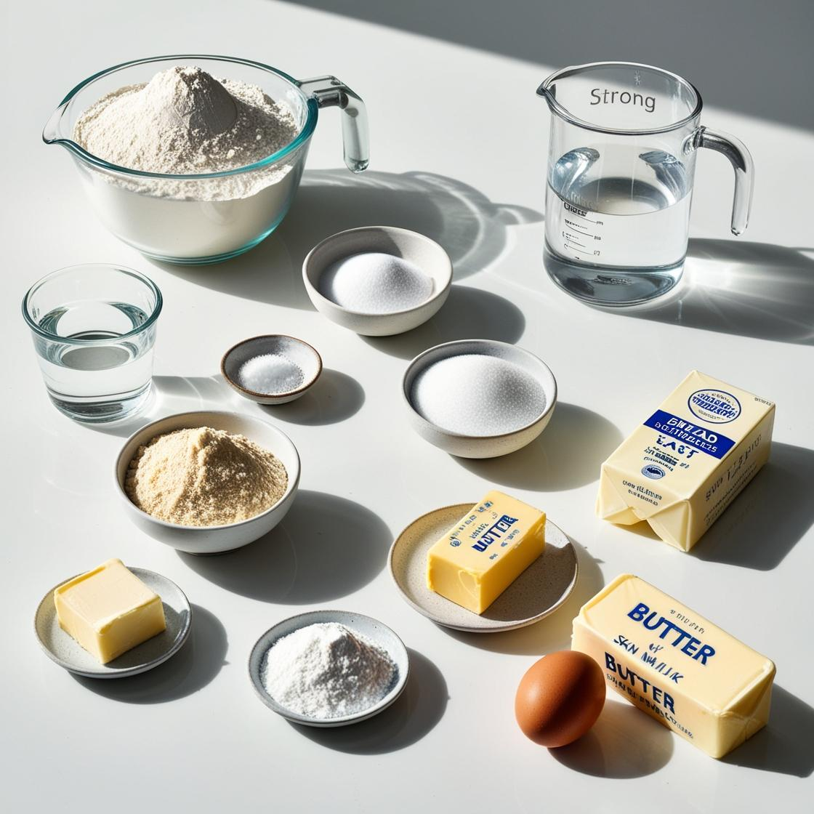

재료 준비하기
강력분: 1200g
우유: 480g
물: 348g
이스트: 48g
제빵 개량제: 12g
소금: 24g
설탕: 60g
쇼트닝: 48g
강력분: 1200g
우유: 480g
물: 348g
이스트: 48g
제빵 개량제: 12g
소금: 24g
설탕: 60g
쇼트닝: 48g
준비한 재료들을 한 곳에 모아 혼합한다
주의할 점!!!쇼트닝은 처음부터 혼합하지 않고 따로 빼둔다
준비한 재료들을 반죽기계에 넣고 반죽을 한다
주의할 점!!!반죽이 한 덩어리로 뭉치면(클린업 단계)쇼트닝을 넣고 반죽한다
1. 가스빼기를 한 후, 표면이 마르지 않도록 비닐을 덮어 발효실에 넣는다
2. 부피의 3 ~ 3.5배가 되면 꺼낸다
발효가 된 반죽을 180g씩 분할한다
분할된 반죽을 둥글리기 한다
반죽을 비닐로 덮어 약 15분 ~ 20분정도 실온에서 중간 발효 한다
반죽을 밀대로 밀면서 가스를 제거해 가면서 밀어준다
밀대로 민 반죽을 3겹 접기(삼봉형)으로 접는다
3겹 접기 한 반죽을 말아준다
반죽의 끝을 꼬집으면서 봉합해준다
1. 식빵틀에 3개의 반죽을 넣어준다
2. 발효실 기계에 2차 발효를 시켜준다
주의할 점!!!봉합면은 무조건 바닥을 향하게 넣어준다
봉합면이 아래가 아니면 갈라짐이 생긴다
1. 오븐 아래 온도: 190°C, 윗 온도: 160°C 시간: 30분간 구워준다
2. 20분후 갈색으로 색나면 윗불 10°C 내리고 위치 교환해준다